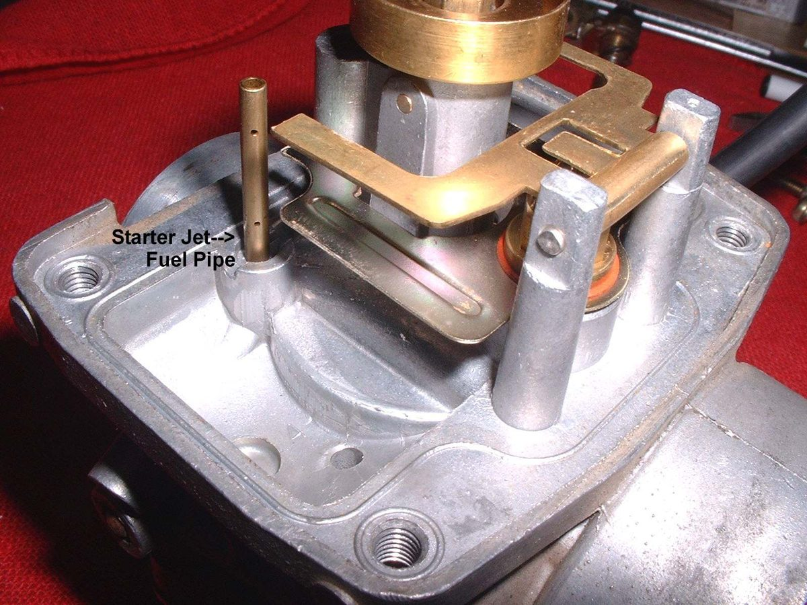

Home mechanic (basic tools) · Time: 1.5 to 3 h (estimate) (estimate)
The carburettor mixes fuel with air using tiny passages called jets. The pilot (slow) jet feeds idle and small throttle, the needle and needle jet feed the middle range, and the main jet feeds full throttle. Old fuel leaves varnish and dirt that blocks these jets. A full strip, clean and rebuild cures most carburettor faults: poor idle, hesitation, flat spots and flooding. Do not replace the carburettor until you have cleaned it properly.
Safety
- Work outdoors or well ventilated, engine cold, no flames, extinguisher near you. Wear glasses and gloves.
- Carburettor cleaner is toxic and burns skin and eyes. Use a face shield with dip cleaner, and blow parts dry pointing away from your face.
- Rubber O-rings, diaphragms and the float needle tip are destroyed by cleaner. Keep them out.
- Two-stroke and scooter carburettors are cleaned the same way, but some scooters have an automatic choke (see Check the choke or starter valve).
You need
- The correct gasket and O-ring kit for your carburettor model (read the make and code on the body).
- Your manual's float height and pilot screw setting. Do not guess them.
Steps
Remove
- Turn the fuel tap OFF and disconnect the battery negative lead if fitted.
- Drain the float bowl into a pan using the drain screw.
- Photograph the carburettor from all sides: cable routing, hose positions, which way the clamps face.
- Loosen the air box clamp and the manifold clamp or nuts. Unscrew the carburettor top, lift out the slide, needle and spring (on a vacuum or CV carburettor the diaphragm comes out with the slide). Unhook the throttle and choke cables.
- Take the carburettor to a clean tray. Plug the engine intake with a clean rag.
Strip
- Remove the float bowl. Push out the float pin, lift out the float and needle together.
- Unscrew the main jet, needle jet holder, needle jet and pilot jet. Screwdrivers must fit exactly; brass jets damage easily.
- Turn the pilot (mixture) screw gently in until it just seats, counting the turns, and write the number down. Then remove it with its spring, washer and O-ring. Some carburettors have an anti-tamper cap or plug; leave it if you cannot remove it without damage.
- Remove all O-rings, gaskets and the diaphragm. Keep them away from the cleaner.
Clean and inspect
- Soak or spray all metal parts with carburettor cleaner as the label directs. Rinse if the label says so, then blow every passage dry with air.
- Hold each jet up to the light. You must see a clean round hole. Clear it with cleaner and air only. Never push wire or a drill through a jet; a scratch changes its size. Replace a jet you cannot clear.
- Check the float needle tip for a worn ring, the float for fuel inside, and the diaphragm for holes (see Check the carburettor float and needle valve).
- Check the slide moves freely in the body and the needle is straight with its clip snug.
Rebuild and refit
- Fit the jets snugly, not tight. Refit the pilot screw, seat it lightly, then turn it out the number of turns you recorded.
- Fit the float and needle. Set the float height to your manual's figure with a gauge or caliper.
- Fit new bowl gasket and O-rings. Tighten bowl screws evenly so the bowl does not crack.
- Refit the needle with its clip in the same groove, the slide with the cutaway facing the air filter side, and the top. Check the throttle opens and closes smoothly.
- Refit the carburettor straight into the manifold and air box rubber. Tighten mounting nuts a little at a time, side to side.
- Reconnect hoses and cables as in your photos. Turn the fuel ON and check for leaks.
More tips
- Wear goggles when blowing out passages. Do not hold the carburettor close to the face.
- Hold small jets in a rag when blowing them with compressed air.
- Spray penetrating oil on a stuck slide or float pin and wait several hours.
- A needle jet breaks easily. See Remove and refit the needle jet.
- Some idle jets are pressed in and cannot be removed. Clean them in place with cleaner and air.
- A small jet in the float bowl cover or bowl feeds the choke. If it is blocked, the choke does nothing. See Clear the choke circuit.
- Use the carburettor maker's own jets and kits. Genuine jets carry the maker's mark.
Check your work
- No fuel leaks from the bowl or overflow pipe after five minutes.
- The throttle snaps shut from full open, with the bars turned fully left and right.
- Warm the engine, then set idle: Adjust carburettor idle speed and mixture.
If it did not fix the problem
- Idle still hunts or rises: Find an intake air leak.
- Fuel pours from the overflow: carb overflowing.
- Still weak or misfiring with clean jets: check the spark with Check for a spark safely and the valves with Check and adjust valve clearance.